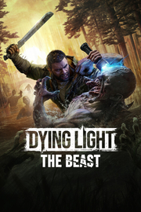

Dying Light: The Beast
Detalles
 |
|
| Tiempo de juego | No Jugado |
| Última actividad | Nunca |
| Añadido | 20/09/2025 15:53:30 |
| Modificado | 21/09/2025 2:50:03 |
| Estado de finalización | Not Played |
| Librería | Playnite |
| Fuente | 6TB STORE |
| Plataforma | PC (Windows) |
| Fecha de lanzamiento | 18/09/2025 |
| Puntuación de la Comunidad | 88 |
| Puntuación de la Crítica | |
| Puntuación de usuario | |
| Género | Acción Aventura Rol |
| Desarrollador | Techland |
| Editor | Techland |
| Característica | Cloud Saves Compat. Parcial Con Mando Cooperativo Cooperativo En Línea Logros De Multijugador Préstamo Familiar Remote Play En TV Un Jugador |
| Enlaces | Punto de encuentro Discusiones Guías Noticias Página de la tienda PCGamingWiki Logros |
| Tag | Acción Acción y aventura Aventura Buena trama Campañas cooperativas Combate Exploración Multijugador Mundo abierto Parkour Posapocalípticos Primera persona Realistas Rol Rol de acción Sangriento Terror Un jugador Violentos Zombis |
Descripción

Eres Kyle Crane, y tras haber sido atrapado por el Barón y sufrir sus horribles experimentos durante años, consigues escapar. Pero las secuelas de ese horror permanecen. Estás a un paso de convertirte en un monstruo, ya que tienes ADN zombi aparte de humano. Apenas puedes controlar a la bestia que hay en tu interior, con todos los problemas que eso conlleva. Pero tendrás que aprender a controlarla si quieres vengarte del hombre que te hizo todo esto.
Dying Light: The Beast combina los géneros de acción y supervivencia en el mundo abierto del valle de Castor Woods, un lugar antaño precioso pero que ahora está hasta arriba de zombis en vez de turistas. Para acabar con quien te capturó, tendrás que formar alianzas frágiles y usar todas las opciones de combate y de movimiento que tienes a tu disposición.
Pero, ¡cuidado! En este sitio, cada paso es una lucha por la supervivencia y más aún al ponerse el sol, pues la tensión se dispara y los verdaderos horrores salen durante la noche.
Mitad Bestia, mitad superviviente
Conviértete en Kyle Crane, un héroe único con el ADN de un superviviente... y el de una bestia. Alterna dos estilos de juego y enfréntate a un brutal conflicto interno entre tu parte humana y tu lado más bestial, hasta aceptar al fin el poder imparable que llevas dentro.
Brutalidad primitiva
Lleva la crudeza del combate de Dying Light al extremo y sobrepasa los límites humanos de la brutalidad. Aplasta cráneos, corta cabezas y parte enemigos en dos mientras luchas por controlar los salvajes poderes bestiales de nuestro héroe, en constante evolución y alimentados por una rabia incontrolable.
Días seguros, noches horrendas
El sello propio de la saga Dying Light: dos experiencias completamente diferentes de día y de noche que se unen para formar un todo inolvidable. Explora el entorno de día y siente la presión del paso del tiempo, pues cada segundo que pasa te acerca al atardecer. Cuando cae la noche, los horrores que la habitan solo te permitirán correr, esconderte o luchar por tu vida.
Domina los tejados, gobierna en los caminos
Siente la adrenalina del mejor parkour en primera persona mientras saltas de azotea en azotea y superas cualquier obstáculo con un sistema de movimiento accesible para todos, pero quienes lo dominen podrán hacer virguerías con él. También puedes ponerte al volante de un vehículo todoterreno y arrasar con hordas de zombis. ¡Disfruta de una libertad de movimiento sin igual en un mundo abierto!
Un apocalipsis zombi «precioso»
Impresionantes gráficos de nueva generación dan vida a un apocalipsis zombi artesanal, donde cada detalle cuenta una historia de supervivencia. Piérdete en la majestuosidad del valle de Castor Woods, inspirado en los Alpes suizos, con sus diversos biomas: el pueblo turístico, la zona industrial, el parque nacional, los campos de cultivo, los pantanos, todos repletos de belleza... y decadencia.
Importante: aquel que haya comprado la Edición Definitiva de Dying Light 2 Stay Human recibirá Dying Light: The Beast sin coste adicional.
Comparte la aventura
Haz grupos de hasta 4 jugadores en modo cooperativo para hacer frente a los peligros de Castor Woods: podréis enfrentaros a cada batalla, descubrimiento y giro de los acontecimientos en compañía. Aprovechad el progreso compartido para completar la aventura codo con codo mientras lucháis contra enemigos despiadados, buscáis recursos y os salváis la vida unos a los otros.